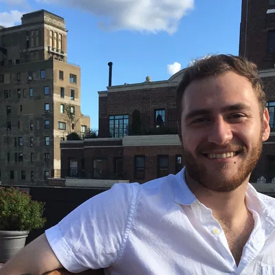
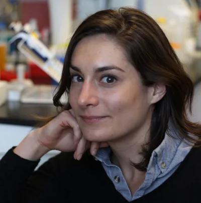
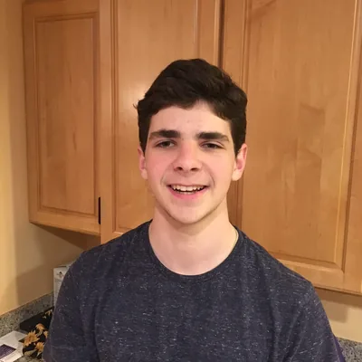
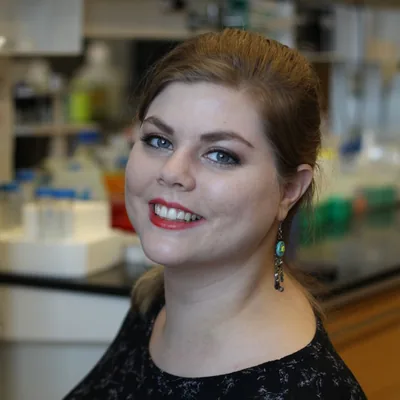
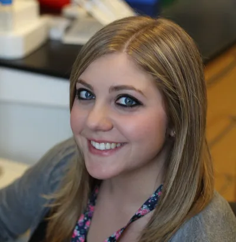
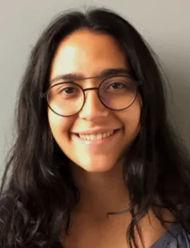
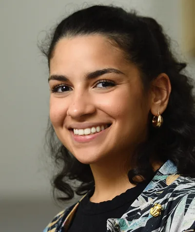

Ph.D., Human Genetics Graduate Program, Current: Alden Scientific
Jared joined the Human Genetics graduate program in 2019 after earning a B.S. in Biomedical Engineering, with a minor in Biophysics, from The George Washington University. In the lab he developed computational methods to study changes in gene expression during development, with a focus on single cell transcriptomics. His thesis work characterized the emergence and roles of a subpopulation of neurons in the enteric nervous system.
Ph.D., Neuroscience, Johns Hopkins MD/PhD Program, Current: completing her M.D. at Johns Hopkins
Alina studied chemistry at Princeton University and, after research in Germany and in China as a Fulbright Scholar, joined the Johns Hopkins MD/PhD program in the Department of Neuroscience. Co-mentored by Dr. Goff and Dr. Solange Brown (JHU Neuroscience), she developed a new assay to measure neuronal connectivity, studied the cellular processes affected in C9orf72-associated ALS, and explored synaptic transcriptional variation in the cortex.

Kavli NDI Postdoctoral Fellow, Current: Bloomberg Assistant Professor of Neuroscience, Johns Hopkins University
Dr. Stein-O'Brien is a Bloomberg Assistant Professor of Neuroscience at Johns Hopkins University and the inaugural holder of the Terkowitz Family Rising Professorship in the Brain Science Institute. She received a Ph.D. in Human Genetics from the Johns Hopkins School of Medicine and an M.H.S. in Biostatistics from the Johns Hopkins Bloomberg School of Public Health in 2017, and completed her postdoctoral training at Johns Hopkins as a Kavli NDI fellow. Her research focuses on the stochastic processes underlying gene regulation in dynamic biological systems, and she develops computational and statistical methods for pattern detection and data integration in high-throughput genomics.
Ph.D., Biochemistry, Cellular and Molecular Biology Graduate Program; NSF Graduate Fellow, Current: Postdoctoral Scholar, UCSF
Jonathan received his Ph.D. from the BCMB program in 2022 and is now a postdoctoral scholar in the lab of Dr. Arnold Kriegstein at the Eli and Edythe Broad Center of Regeneration Medicine and Stem Cell Research, UCSF. Before joining our lab, he was a research technician in the lab of Dr. Hao Jiang at the University of Alabama at Birmingham. He earned his B.A. in Biochemistry, with a minor in Mathematics, from Maryville College in Tennessee.
Ph.D., Human Genetics Graduate Program, Current: Postdoctoral Fellow, Beier & Shendure Labs, UW / Seattle Children's Research Institute
Liz joined the Human Genetics program in August 2015 after receiving her B.A. in Chemistry from Yale University, where her undergraduate thesis used a genetic study of a family trio to identify a causal variant for a neurological disorder. Working across experimental and computational biology, her thesis characterized newborn enteric neurons in a mouse model of Hirschsprung disease and defined roles for the receptor tyrosine kinase RET in neural fate specification in the mammalian gut.
Kenji Johnson, Ph.D.
Postdoctoral Fellow

Asher Baraban
Intern, Software Development
As an undergraduate at Washington University in St. Louis, Asher developed scProject, a single cell transfer learning tool for visualizing and exploring latent space utilization.
Michael Feyder
Postdoctoral Fellow, Current: Data Engineer, UPitt
Gabrielle Cannon
Research Technologist, Current: Genomic Services Manager, Advanced Analytics Core, UNC Chapel Hill
Brian Clark, Ph.D.
Postdoctoral Fellow, Current: Assistant Professor, Departments of Ophthalmology & Visual Sciences and Developmental Biology, Washington University School of Medicine, St. Louis
Gloria Shin
Research Technologist

Victoria Hoskins
Ph.D., Human Genetics Graduate Program, Current: Postdoc, UNC Chapel Hill

Research Technologist, Current: JHU CMM Graduate Program

Alejandra Patino
Predoctoral Fellow, JHU PREP Program, Current: MD/PhD student (Molecular Cancer Biology), Duke University

Alexa Pérez-Torres
Predoctoral Fellow, JHU PREP Program, Current: Harvard MCO Graduate Program (Murray Lab)